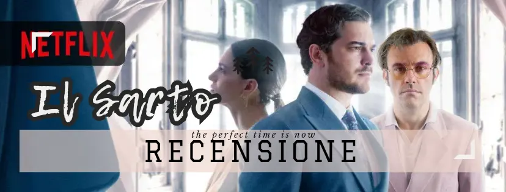
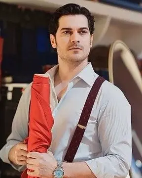
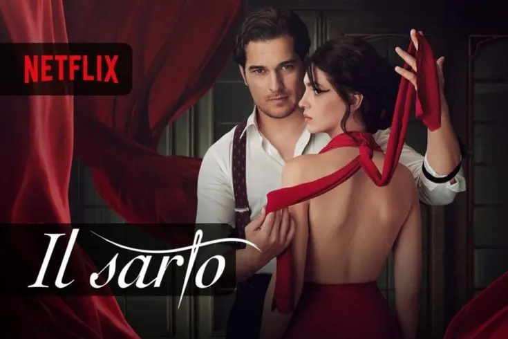
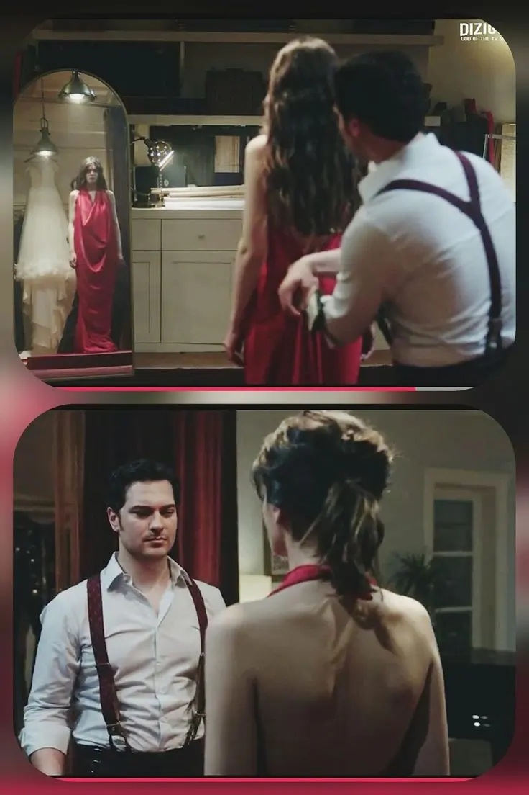

RECENSIONE NETFLIX: "Il sarto'


Attore e modello
Ah, Il Sarto su Netflix, una serie che oltre ad offrirci trame avvincenti, ci regala anche uno sguardo ad una bellezza mozzafiato!
Icosa dire del Sarto se non che il protagonista è un gran bel manzo? 😂
A parte gli scherzi, lasciamo stare i suoi attributi fisici, perché questa serie non si limita solo ad offrire qualcosa per il gusto degli occhi (anche se, ammettiamolo, è un bel bonus!).
Qui, la trama coinvolge tre personaggi principali che si ritrovano intrappolati in un articolato intreccio di segreti.

Tutto ha inizio quando il nostro famoso sarto, interpretato magistralmente da Çağatay Ulusoy, accetta di cucire l'abito da sposa per la fidanzata del suo migliore amico.
Ma come spesso accade nelle serie tv, l'apparenza ingannevole cela in realtà dei segreti. Man mano che le cuciture si susseguono, emergono segreti che metteranno a dura prova la loro amicizia e le loro vite, portando la trama verso intrecci amorosi e amicizie complicate.

La trama di "Il sarto" ha suscitato in me un certo grado di curiosità iniziale. Mi ha intrigato l'idea di un giovane sarto che eredita non solo il talento, ma anche una complicata situazione familiare.
Tuttavia, devo ammettere che nel complesso, l'interpretazione e l'ambientazione di questa storia non mi hanno entusiasmato particolarmente.
La prima stagione ha avuto i suoi momenti interessanti, con una buona dose di suspense. Inoltre, ho trovato alcune scelte narrative piuttosto prevedibili.
Purtroppo, le mie riserve si sono rafforzate con l'inizio della terza stagione. Ho trovato la trama un po' monotona e alcune situazioni sono sembrate ripetitive.
Le sorprese sono state rare e i colpi di scena prevedibili.
Tuttavia, ho deciso di portare a termine la visione solo per soddisfare la mia curiosità su come si sarebbe conclusa la storia.
Non posso negare che "Il sarto" abbia avuto alcuni elementi intriganti, ma nel complesso, non è stata all'altezza delle aspettative.
Ripeto, vale la pena solo per il protagonista XD